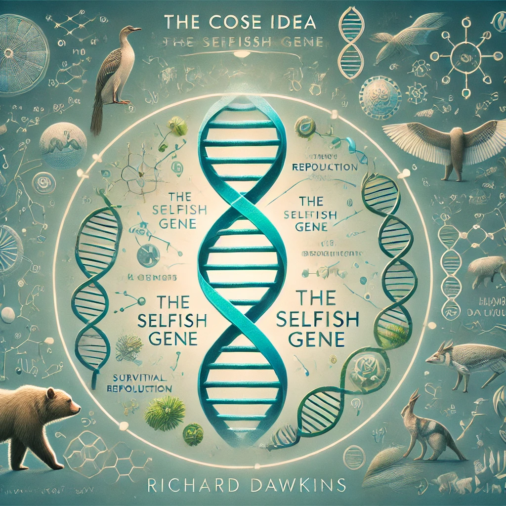

이기적 유전자
목차
작가
Richard Dawkins
출판일
1976년
감상평에 대한 AI 그림
이기적 유전자는 제가 이전에는 생각하지 못했던 생명 현상을 유전자 수준에서 분석하는 독창적인 시각을 제시하여 놀라웠습니다.

감상평에 대한 AI 평가
✨ **유전자 중심 진화론의 혁신:** '이기적 유전자'는 진화의 주체를 개체가 아닌 유전자로 봄으로써 진화론에 대한 근본적인 질문을 던지고 새로운 해석을 제시합니다.
✨ **밈(Meme) 개념의 도입:** 문화적 유전자인 '밈' 개념을 통해 문화의 진화 과정을 설명하며, 유전자와 문화의 상호작용에 대한 이해를 넓혀줍니다.
✨ **생명 현상에 대한 새로운 통찰:** 생명체의 행동을 유전자의 생존과 번식이라는 관점에서 분석함으로써, 생명 현상에 대한 깊이 있는 통찰을 제공합니다.